Bem-vindo(a) ao Reino Unido
Imagine andar por ruas de paralelepípedos onde cada esquina conta uma história. O Big Ben marcando as horas da sua nova rotina.
O cheiro de café misturado à garoa londrina. O sotaque britânico ecoando nas conversas ao seu redor.
Fazer um intercâmbio em Londres tem esse poder.
.jfif)
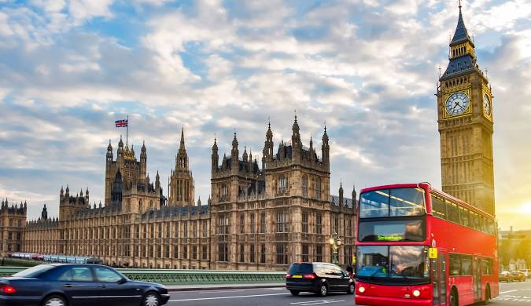
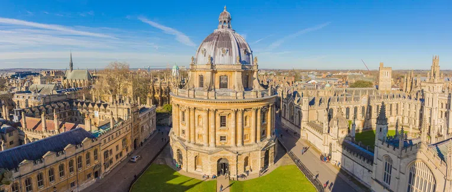
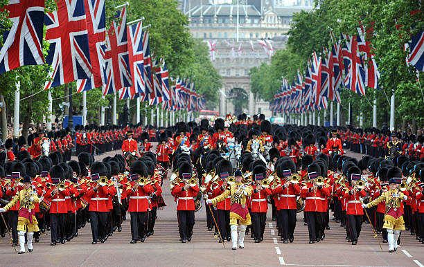
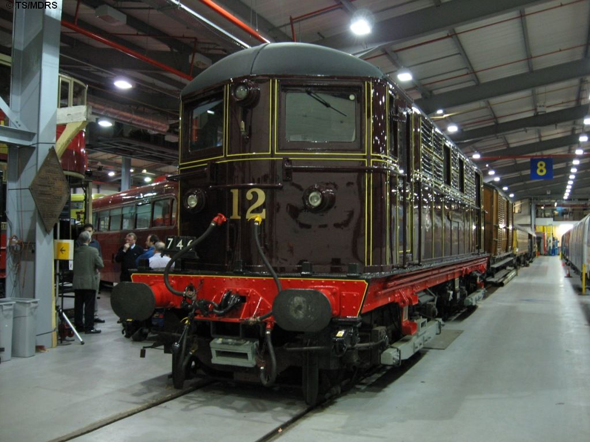
Aqui, você vai descobrir tudo o que precisa saber sobre o intercâmbio em Londres e transformar essa experiência em algo inesquecível,
desde dicas práticas até os segredos que fazem Londres ser um dos destinos mais fascinantes do mundo.
Localização
Documentos e Visto
Para estudar no Reino Unido, é essencial ter o visto certo.
- Cursos até 6 meses → Short-term Study Visa
- Cursos maiores → Student Visa (com direito a trabalhar até 20h/semana)
- Com o visto longo, você tem acesso ao NHS, o sistema público de saúde britânico
DICA: leve sempre cópias digitais e físicas dos documentos importantes.
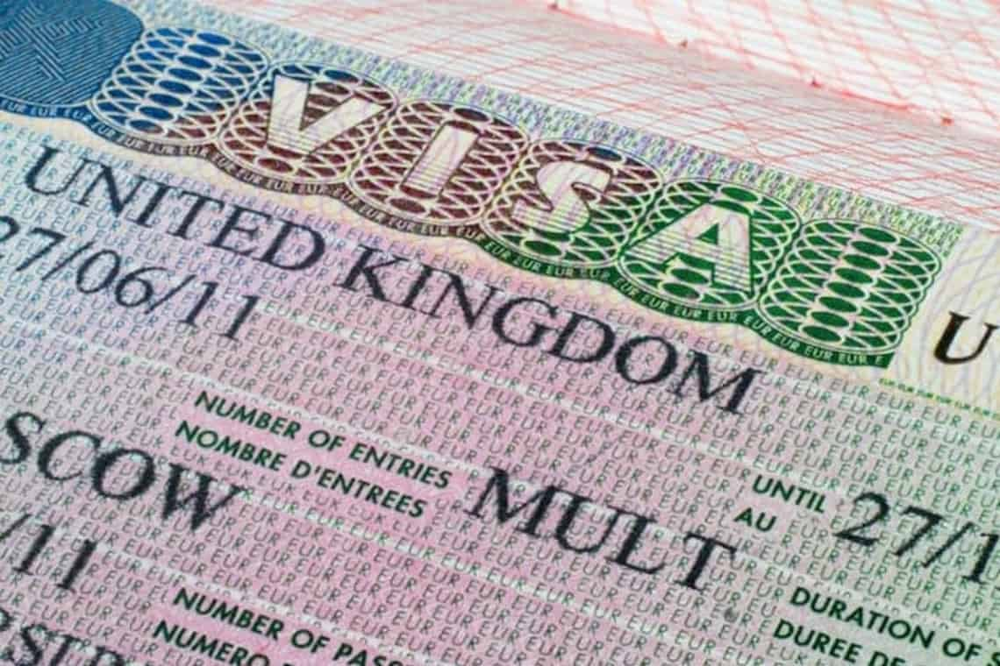
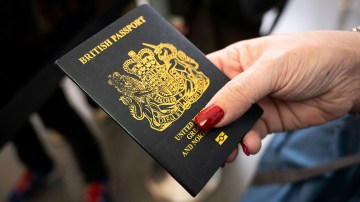
Idioma e Comunicação
O idioma oficial é o inglês britânico, conhecido pela pronúncia elegante e pelos sotaques variados.
Palavras diferentes do inglês americano:
- Lift (elevador), Flat (apartamento), Underground (metrô).
E prepare-se para ouvir muito cheers, mate e sorry!
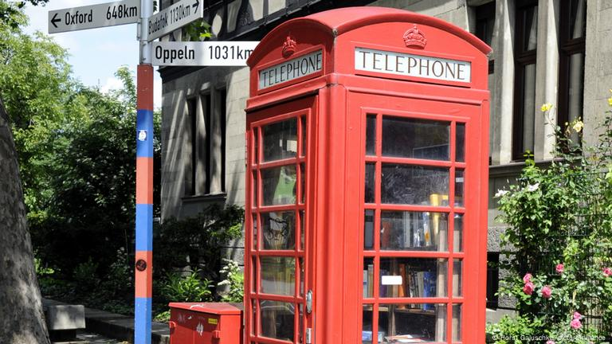
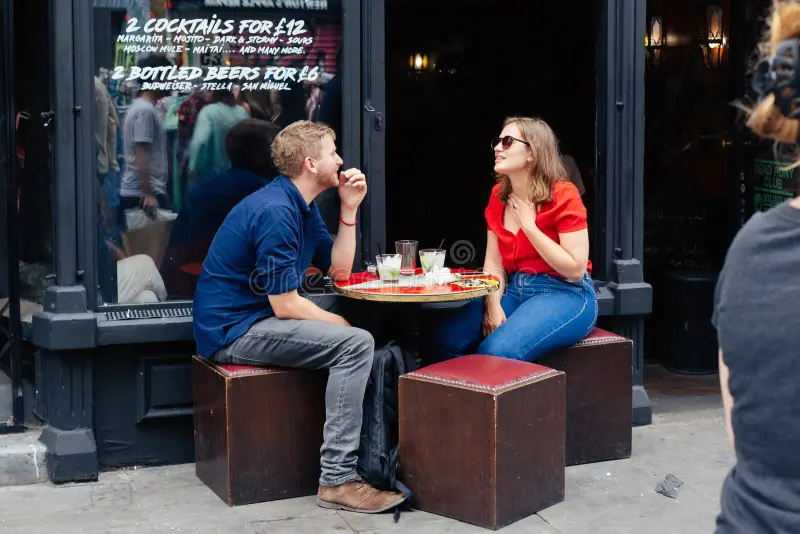
Cultura e Comportamento
- Pontualidade, respeito e educação são leis não escritas
- Sempre use please, thank you e sorry
- Furar fila? Nem pensar
- O humor britânico é irônico e sutil — leve na esportiva
- Os britânicos valorizam o espaço pessoal e a privacidade
- Tradições como o Bonfire Night e Morris Dance (Dança de Fitas), são eventos tradicionais no país
☕ Ah, e o chá das cinco é quase sagrado!
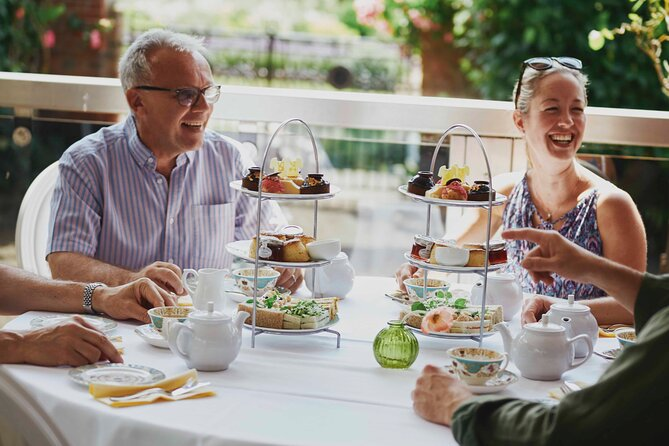
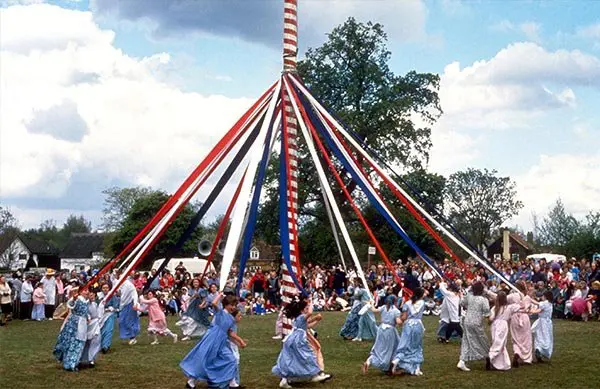
Educação e Faculdades
O Reino Unido tem algumas das melhores universidades do mundo, como Oxford, Cambridge e UCL
- O ensino é mais independente e participativo — você pesquisa, debate e pensa por conta própria
- Há opções de cursos curtos, summer schools e programas de intercâmbio em várias áreas.
Acomodação e Convivência
As opções mais comuns são:
- Homestay: morar com uma família local
- Residência estudantil: ambiente jovem e internacional
- Flatshare: dividir apartamento com outros estudantes
Respeite regras, mantenha o espaço limpo e seja colaborativo.
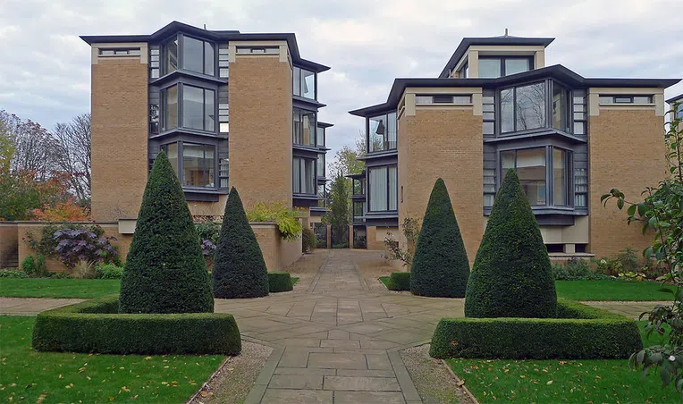
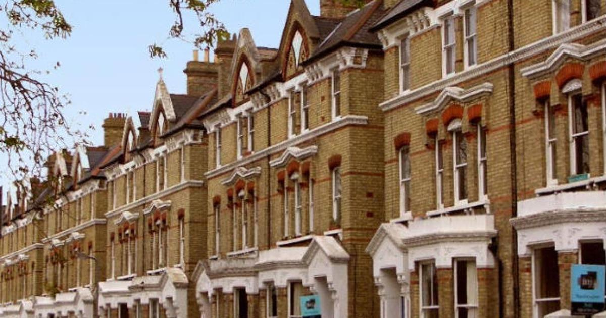
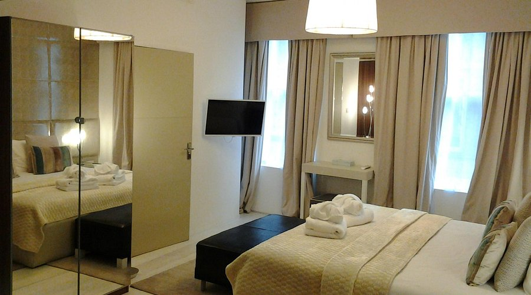
Culinária
Prepare-se para descobrir sabores curiosos:
- Clássicos: fish and chips, shepherd’s pie, Sunday roast e o full English breakfast.
- Sobremesas: scones, apple pie, pudding.
- Chá com leite é tradição — e você vai se acostumar!
Graças à imigração, há comida do mundo todo por lá.

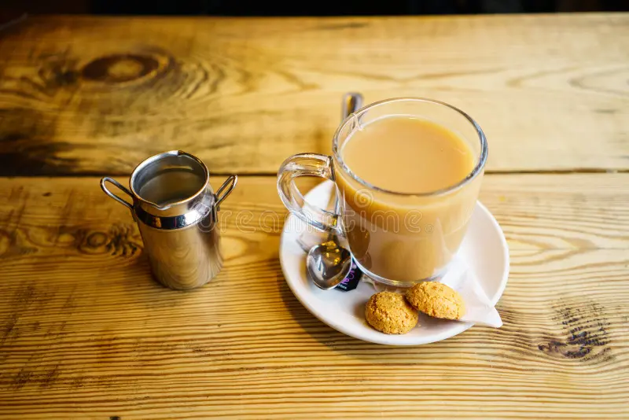
Custo de Vida e Dinheiro
A moeda é a Libra Esterlina (£) e o custo de vida pode ser alto, especialmente em Londres
Mas dá pra economizar com:
- Descontos estudantis (ISIC, TOTUM)
- Transporte com Oyster Card ou Railcard
Morar em cidades menores (como Manchester, Leeds ou Nottingham)
💳 Quase tudo é pago por cartão ou aproximação.
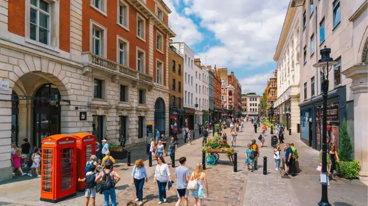
Transporte e Deslocamento
- O transporte público é eficiente e pontual
- Use o metrô (Tube), ônibus ou trem
Lembre-se: os carros andam do lado esquerdo e o volante fica à direita!
Ao atravessar a rua, olhe para o lado certo — e confira as placas “Look right / Look left”.
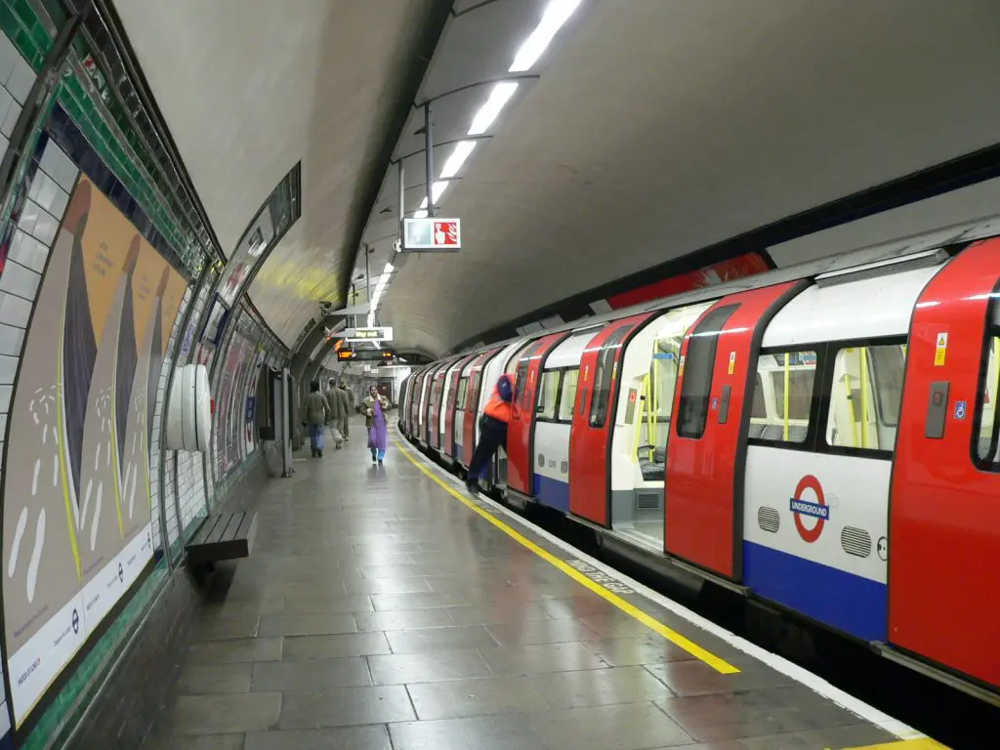
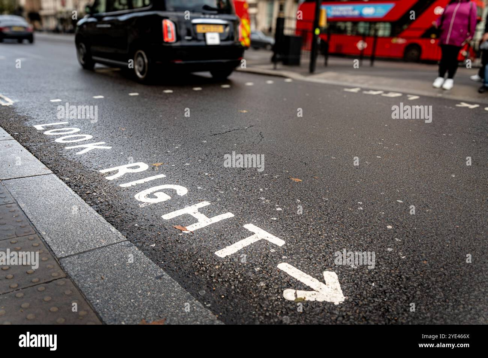
Clima e Estilo de Vida
- Chuva é quase diária ☔ — leve guarda-chuva e roupas em camadas
- Inverno: frio e escuro cedo.
- Verão: dias longos e cheios de festivais.
Mesmo com o clima cinza, os parques e jardins são lindos o ano todo.
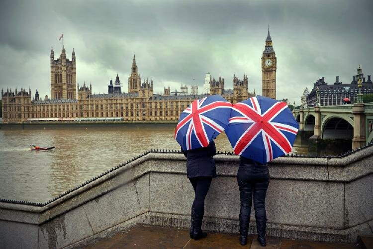
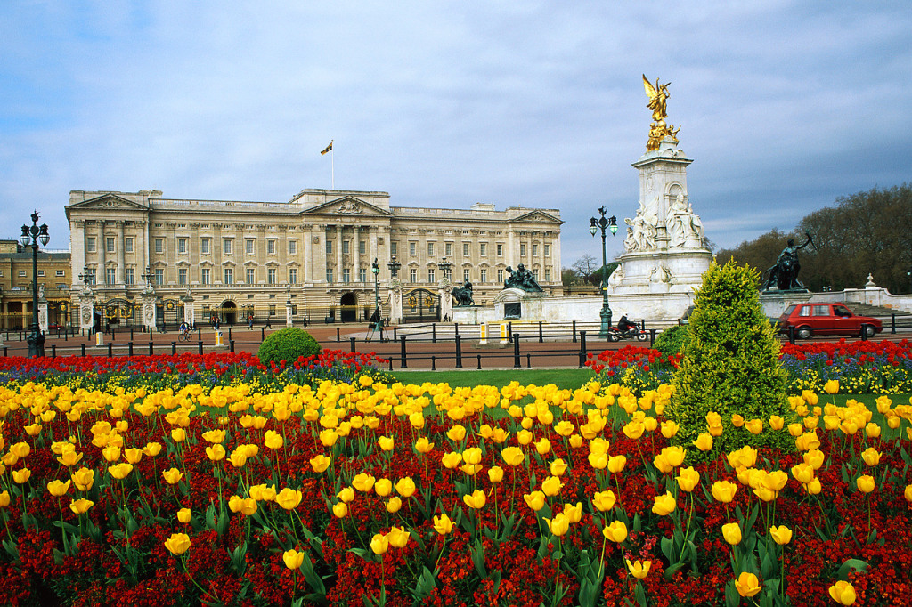
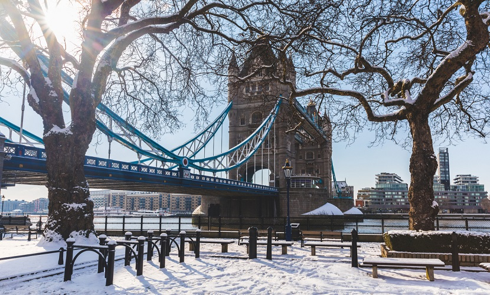
Moda
A moda britânica mistura tradição e modernidade:
- Clássica: trench coats, chapéus e botas elegantes, muito comuns em Londres
- Urbana/alternativa: cores, estampas ousadas e criatividade em bairros como Camden e Shoreditch
DICA: observar o estilo local ajuda a entender a cultura e o estilo de vida britânico.

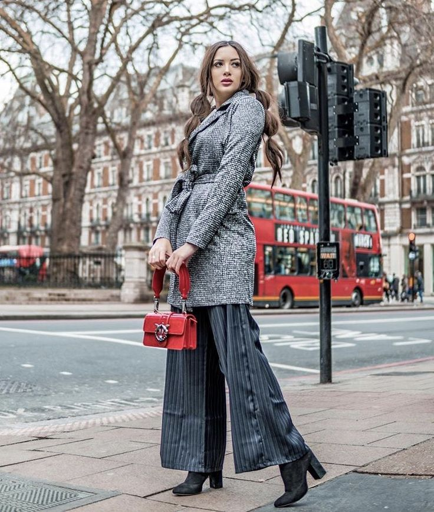
Trabalho e Experiência
Durante o intercâmbio, dá pra trabalhar meio período
- Os britânicos valorizam pontualidade, responsabilidade e boa comunicação
Participar de clubes e eventos da universidade é uma ótima forma de fazer networking e amigos.
Adaptação e Saúde Mental
No início, o choque cultural é normal — tudo é novo!
Mas logo vem a fase da descoberta: novas amizades, sotaques e aprendizados
As universidades oferecem apoio psicológico e social.
💡 A melhor forma de se adaptar é viver o país de verdade: converse, explore e aprenda todos os dias.

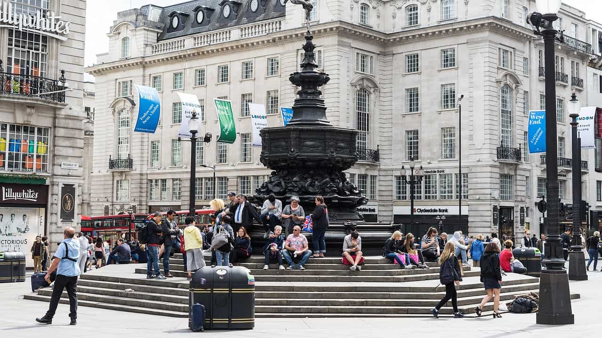